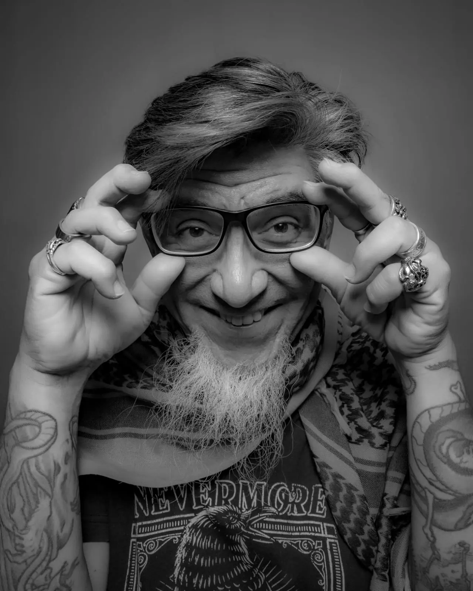
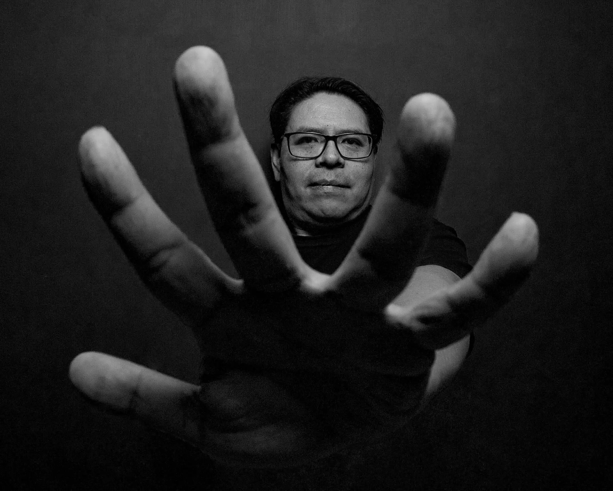

Alejandro Olarte |
Alfredo Campos |
 |
 |
Su elucidación fotográfica está veladamente ligada a su práctica como psicoanalista docente. Desarrolla su trabajo en el cruce entre la mirada, la materia y las formas en que los cuerpos y los territorios conservan las huellas de su transformación. Su mirada fotográfica se constituye particularmente cuando el paisaje deja de ser escenario para convertirse en presencia: la fractura, el desgaste, el resto, la ausencia y aquello que persiste después de la pérdida de una forma. La lente se detiene en las relaciones entre lo orgánico y lo mineral, entre cuerpo y espacio, así como en las tensiones entre permanencia y transformación. pSu manera de aproximarse a los objetos y de construir la imágen de los mismosa traves de la cámara, está atravesada por campos de formación heterogéneos a partir de los cuales, pretende construir imágenes que se sostengan en la tensión de las experiencias sensibles y materiales que les dieron lugar. Paralaje. Testimonio de resistencia y permanencia, forma parte de una exploración fotográfica en curso sobre la transformación de la materia y de la mirada. |
Fotografiar, para mí, ha sido siempre una forma de respirar mejor. Comencé desde el 2010 buscando un espacio donde pudiera concentrar mi energía, bajar el ruido cotidiano y enfocarme por completo en un solo acto. La cámara se convirtió en ese refugio: una herramienta para estar presente. Trabajo en dos mundos que se tocan más de lo que parece. Fuera del estudio, me muevo hacia el territorio de las fiestas populares. Allíi la danza, las máscaras y la energía colectiva hacen que todo sea impredecible. Sigo el ritmo del festejo, dejando que el movimiento y la espontaneidad decidan la fotografía. Me interesa cómo la comunidad se expresa a través del cuerpo, cómo la tradición se vuelve gesto vivo. Aunque parezcan caminos distintos, ambas partes de mi trabajo hablan del mismo impulso: observar cómo el cuerpo crea significado. Ya sea en un estudio silencioso o en una calle llena de música, busco capturar momentos donde la presencia humana revela algo profundo. |
IG: @haxenabraxas | @nadie_como_odiseo | @alejandro0larte.psicoanalista |
IG: @ac_fotoblog | @photonpix.mx02 |